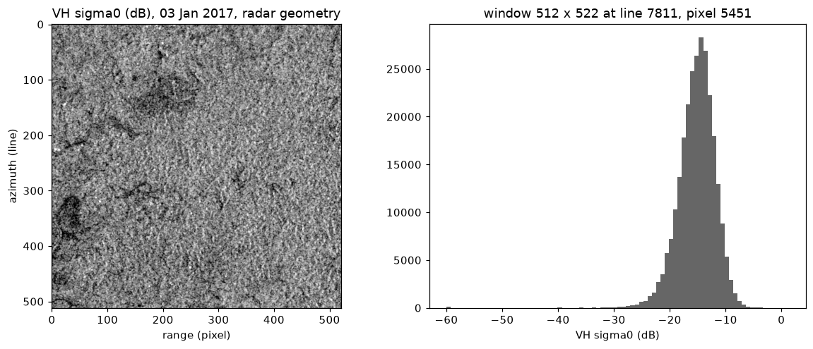
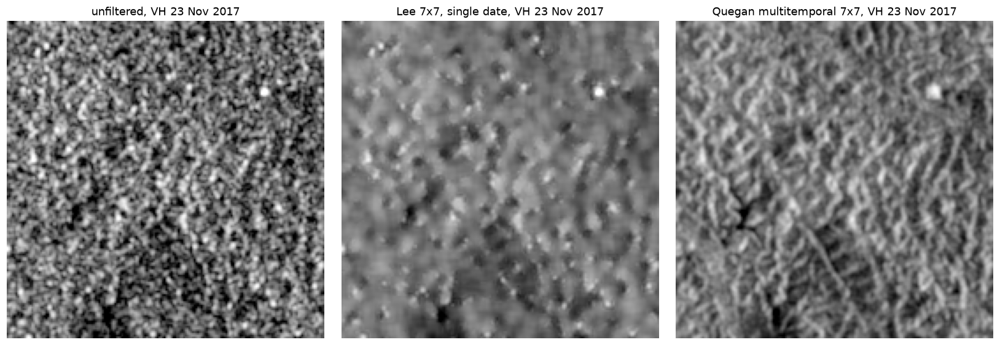
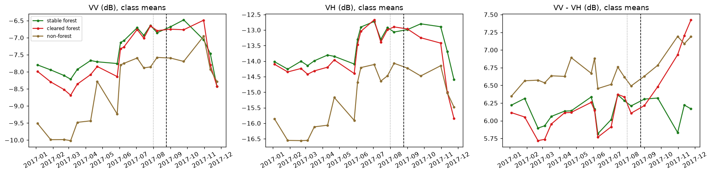
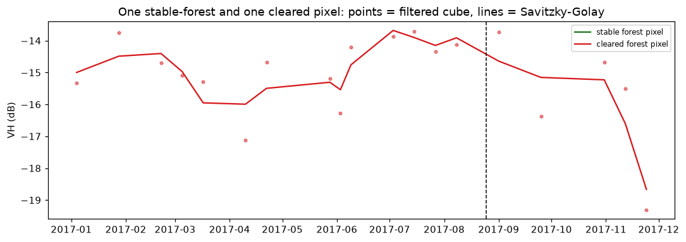
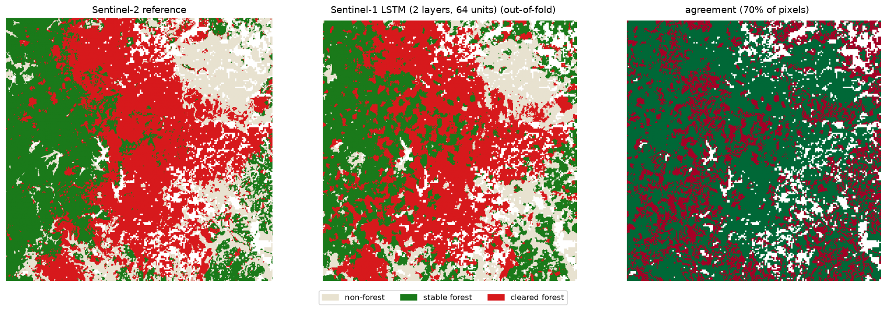

Sentinel-1 Multitemporal GRD Time Series: Deforestation around the Rohingya Camps (2017)
*Dr.
Overview
Zia U. Ahmed · Upatta Analytics LLC · uses GeoLattice’s geolattice.rsense remote sensing subpackage*
In this notebook you will process a 2017 stack of Sentinel-1 GRD scenes over the Rohingya camps in Cox’s Bazar, Bangladesh, from calibrated scenes to a co-registered, speckle-filtered and terrain-corrected time series, and use it to map forest clearing with machine-learning classifiers.
Core concepts
Learning objectives
Build a 2017 Sentinel-1 IW GRDH time series on descending relative orbit 77 over the Rohingya camps at Kutupalong, Balukhali, Camp 4 Extension and Camp 18.
Calibrate each scene’s area-of-interest window to sigma0 with read_grd_subset and that scene’s own calibration and noise look-up tables.
Co-register every date onto one 10 m UTM grid with create_stack, and check each date’s offset against the stack mean.
Apply the Quegan and Yu multitemporal speckle filter and compare its ENL and edge strength with a single-date Lee filter on stable forest.
Measure the ground-control-point geocoding shift against Planetary Computer RTC and Sentinel-2, then register the stack to the RTC grid with estimate_offset and apply_offset.
Build an xarray data cube in decibels, summarise each pixel with before and after 1 August 2017 features, and smooth the series with a Savitzky-Golay filter.
Classify non-forest, stable forest and forest cleared during 2017 with Random Forest, XGBoost and an LSTM, using 500 m spatial block cross-validation against the Sentinel-2 reference.
Planetary Computer sentinel-1-grd (measurement COGs plus each scene’s calibration and noise XML), read remotely
Sentinel-1 RTC (terrain-corrected gamma0), same track and dates
Planetary Computer sentinel-1-rtc (reference for Step 3)
Copernicus DEM GLO-30
Planetary Computer cop-dem-glo-30
Sentinel-2 L2A over the same AOI, January-February and November-December 2017
../../../../Data/08_remote_sensing/08_02_optical/s2_rohingya_2016_2018/ (downloaded by Notebook 07_02_05, Section 10)
The radar inputs are read once and cached under Data/08_remote_sensing/08_03_radar/s1_rohingya_2017/; later runs reuse them.
Contents
Data
The 2017 clearing and the processing chain
Setup
Area, dates and the Sentinel-1 archive
GRD steps on every scene: calibrated windows
Co-register the stack
Multitemporal speckle filter
Terrain correction to a common grid
Convert to dB
The data cube
Temporal features
Smoothing
Classification
Validation
Summary and exercises
The 2017 clearing and the processing chain
In the weeks after 25 August 2017, more than 700,000 Rohingya refugees crossed from Myanmar into Cox’s Bazar, Bangladesh. Kutupalong and Balukhali, modest existing camps, grew within months into the world’s largest refugee settlement. The reserve-forest hillsides around them were cleared for shelters, firewood and footpaths faster than almost any other land-cover change this notebook series has looked at. The AOI below covers Camp 4 Extension, Camp 18 and the Balukhali/Moragachhtola area, matching the screenshot used to define it.
Section 10 of Notebook 07_02_05 followed this clearing with Sentinel-2 and met the limit of optical monitoring: the influx began in the June-October monsoon, when the AOI is almost always under cloud. Radar sees through cloud. This notebook builds a multitemporal Sentinel-1 GRD time series for 2017 from the raw GRD products, scene by scene, and turns it into a deforestation map:
Step
What
Function
GRD steps 1 to 5 on every scene
Thermal-noise removal and radiometric calibration of each scene’s AOI window (Notebook 07_03_01_01), one track, one orbit direction
rs.sar.read_grd_subset
1. Co-register the stack
Every scene geocoded onto one common grid (SNAP CreateStack)
rs.sar.create_stack
2. Multitemporal speckle filter
Quegan & Yu filter across all dates (SNAP Multi-Temporal-Speckle-Filter)
rs.sar.multitemporal_speckle_filter
3. Terrain correction to a common grid
Register to a DEM-terrain-corrected reference; compare with full RTC
rs.sar.estimate_offset, rs.sar.apply_offset
4. Convert to dB
After all averaging in linear units
rs.sar.to_db
5. Data cube
xarray Dataset with a time dimension
xarray
6. Temporal features
Mean, median, std, min, max, percentiles, date of minimum VH, amplitude, before/after change
NumPy
7. Smoothing
Savitzky-Golay filter along time
SciPy
8. Classification
Random Forest, XGBoost and an LSTM
scikit-learn, XGBoost, PyTorch
9. Validation
Against an independent Sentinel-2 reference, with spatial cross-validation
scikit-learn
Setup
Installation. This notebook needs installation option 6 (every GeoLattice module): pip install "geolattice[all]". See “Installation options” in the GeoLattice README.
Code
# show figures inside the notebook%matplotlib inlineimport json # read the Sentinel-2 item metadataimport time # timingimport warnings # warning controlfrom pathlib import Path # file pathswarnings.filterwarnings("ignore") # hide library warningsimport numpy as np # arraysimport pandas as pd # tablesimport geopandas as gpd # vector data (the AOI box)import xarray as xr # labelled raster cubesimport rioxarray # noqa: F401import matplotlib.pyplot as plt # figuresfrom shapely.geometry import box # rectangle geometryfrom rasterio.enums import Resampling # resampling methodsfrom scipy.signal import savgol_filter # Savitzky-Golay smoothing filterimport pystac # read and write saved STAC itemsimport pystac_client # STAC search clientimport planetary_computer # signs Planetary Computer URLsimport odc.stac # load STAC items into xarrayimport geolattice.rsense as rs # GeoLattice remote sensingfrom geolattice.rsense.sar import speckle # speckle filters and ENLplt.rcParams.update({"figure.dpi": 110}) # figure resolutionDATA = Path("../../../../Data/08_remote_sensing/08_03_radar") # data folderCACHE = DATA /"s1_rohingya_2017"# cache for the downloaded and processed stacksCACHE.mkdir(parents=True, exist_ok=True) # create it if neededOUTPUTS = Path("outputs") # folder for resultsOUTPUTS.mkdir(exist_ok=True) # create it if needed# Sentinel-2 scenes of the same area, downloaded by the optical notebookS2_DIR = Path("../../../../Data/08_remote_sensing/08_02_optical/s2_rohingya_2016_2018")ifnot S2_DIR.exists(): # stop with a clear message if they are missing# stop with a clear messageraiseFileNotFoundError(f"{S2_DIR} is missing: run Section 10 of Notebook 07_02_05 first")CRS, RES ="EPSG:32646", 10# UTM 46N; 10 m grid, the Sentinel-2 grid of the reference# GeoLattice version and cache folderprint("geolattice.rsense", rs.__version__ ifhasattr(rs, "__version__") else"", "| cache:", CACHE)
AOI: 21.213115 N, 92.130199 E to 21.179337 N, 92.166669 E (about 14 km²). The three dates split 2017 into a before period (1 January to 1 August, pre-influx) and an after period (1 August to 1 December, which contains the influx of 25 August and the months of clearing that followed).
Code
ROH_DATES = [ # start of the "before" period, the cut-off date, and the end of the "after" period"2017-01-01", "2017-08-01", "2017-12-01",]ROH_MINLON, ROH_MAXLON =92.130199, 92.166669# AOI longitude limitsROH_MINLAT, ROH_MAXLAT =21.179337, 21.213115# AOI latitude limits# the AOI as a one-polygon GeoDataFrame in WGS 84ROH_AOI = gpd.GeoDataFrame(geometry=[box(ROH_MINLON, ROH_MINLAT, ROH_MAXLON, ROH_MAXLAT)], crs=4326)BOUNDS = (ROH_MINLON, ROH_MINLAT, ROH_MAXLON, ROH_MAXLAT) # the same box as a tupleINFLUX = pd.Timestamp("2017-08-25") # the date the refugee influx began# AOI area and the two periodsprint(f"AOI {ROH_AOI.to_crs(CRS).area.iloc[0] /1e6:.1f} km²; before: {ROH_DATES[0]} to {ROH_DATES[1]}; after: {ROH_DATES[1]} to {ROH_DATES[2]}")def pc_catalog(): # the Planetary Computer STAC catalogue, opened only when a search is neededreturn pystac_client.Client.open("https://planetarycomputer.microsoft.com/api/stac/v1", modifier=planetary_computer.sign_inplace)def pc_href(href): # a freshly signed URL (saved items keep their old, expired token)return planetary_computer.sign(href.split("?")[0])grd_file = CACHE /"grd_items_2017.json"# the catalogue search, saved by an earlier runif grd_file.exists(): # searched before: read the saved items from the local drive grd =list(pystac.ItemCollection.from_file(str(grd_file)))else: # first run: every Sentinel-1 GRD scene of 2017 over the AOI, sorted by time, then saved grd =sorted(pc_catalog().search(collections=["sentinel-1-grd"], bbox=list(BOUNDS), datetime="2017-01-01/2017-12-31").items(), key=lambda i: i.datetime) pystac.ItemCollection(grd).save_object(str(grd_file)) # keep it for the next run# one row per scene: track, pass, platform, polarisations and datearchive = pd.DataFrame([{"track": i.properties["sat:relative_orbit"], "pass": i.properties["sat:orbit_state"],"platform": i.properties["platform"], "pols": "+".join(i.properties["sar:polarizations"]),"date": i.datetime.date()} for i in grd])# scenes per track and pass, with first and last datearchive.groupby(["track", "pass", "platform", "pols"]).date.agg(["count", "min", "max"])
AOI 14.2 km²; before: 2017-01-01 to 2017-08-01; after: 2017-08-01 to 2017-12-01
count
min
max
track
pass
platform
pols
41
ascending
SENTINEL-1A
VV
2
2017-01-13
2017-02-06
VV+VH
25
2017-02-18
2017-12-27
77
descending
SENTINEL-1A
VV+VH
20
2017-01-03
2017-12-29
SENTINEL-1B
VV+VH
1
2017-06-02
2017-06-02
Planetary Computer holds 48 GRD scenes over the AOI for 2017 on two relative orbits:
Ascending track 41: 27 scenes, but the first two (13 January and 6 February) are VV only.
Descending track 77: 20 Sentinel-1A scenes and one Sentinel-1B scene, all VV+VH, from 3 January to 29 December.
A time series must come from one relative orbit: every scene then has the same viewing geometry, so differences between dates are changes on the ground, not in incidence angle or look direction. Track 77 covers the whole window in both polarisations. Sentinel-1B flies the same orbits as 1A, so its one scene joins the series.
Code
TRACK =77# use one relative orbit (track) so every scene has the same geometry# dual-pol scenes of that track within the study perioditems = [i for i in grd if i.properties["sat:relative_orbit"] == TRACKand ROH_DATES[0] <=str(i.datetime.date()) <= ROH_DATES[2] and"VH"in i.properties["sar:polarizations"]]# acquisition times (UTC, timezone removed)times = pd.to_datetime([i.datetime for i in items], utc=True).tz_convert(None)# label each date as before or after the cut-offperiod = np.where(times < pd.Timestamp(ROH_DATES[1]), "before", "after")# number of scenes in each periodprint(f"track {TRACK}: {len(items)} dual-pol scenes; before {np.sum(period =='before')}, after {np.sum(period =='after')}")# the dates of each periodprint(pd.Series(times.strftime("%d %b"), index=period).groupby(level=0).agg(", ".join).to_string())
track 77: 19 dual-pol scenes; before 13, after 6
after 07 Aug, 31 Aug, 24 Sep, 30 Oct, 11 Nov, 23 Nov
before 03 Jan, 27 Jan, 20 Feb, 04 Mar, 16 Mar, 09 Apr...
GRD steps on every scene: calibrated windows
Notebook 07_03_01_01 took one GRD scene through the full chain. Here the same steps run on every scene, but only on the AOI. read_grd_subset locates the AOI in each scene’s radar geometry with the scene’s own ground control points (GCPs), reads just that window from the remote Cloud-Optimized GeoTIFF (about 0.6 MB instead of ~600 MB per polarisation), and applies thermal-noise removal and calibration to sigma0 with the scene’s own calibration and noise look-up tables, sampled at the window’s true position in the scene.
Code
def read_scenes(): # read and calibrate every scene scenes, rows = {"vv": [], "vh": []}, [] # calibrated windows per polarisation, and a logfor it in items: # loop over the scenes t0 = time.perf_counter() # time each scenefor pol in ("vv", "vh"): # both polarisations# read only the window around the AOI, calibrate to sigma0 and remove thermal noise scenes[pol].append(rs.sar.read_grd_subset( pc_href(it.assets[pol].href), pc_href(it.assets[f"schema-calibration-{pol}"].href), pc_href(it.assets[f"schema-noise-{pol}"].href), bounds=BOUNDS, margin=40))# window size and run time rows.append({"scene": it.id, "window (rows x cols)": "x".join(map(str, scenes["vh"][-1]["window"][2:])),"seconds": round(time.perf_counter() - t0, 1)})return scenes, pd.DataFrame(rows) # return the scenes and the log as a tablestack_file = CACHE /f"grd_sigma0_track{TRACK}_2017.nc"# the processed stack is cached as NetCDFif stack_file.exists(): # reuse it when presentprint("Reusing", stack_file) # the cached stack will be loaded instead scenes =None# the individual scenes are not needed thenelse: t0 = time.perf_counter() # start the timer scenes, read_log = read_scenes() # read and calibrate all scenes# total run timeprint(f"{len(items)} scenes x 2 polarisations read and calibrated in {time.perf_counter() - t0:.0f} s") display(read_log.head(3)) # first three rows of the log s = scenes["vh"][0] # the first VH scene fig, ax = plt.subplots(1, 2, figsize=(11, 4.6)) # two panels# VH sigma0 in dB, still in radar geometry ax[0].imshow(rs.sar.to_db(s["data"]), cmap="gray", vmin=-25, vmax=-5)# title and axis labels ax[0].set_title(f"VH sigma0 (dB), {times[0]:%d %b %Y}, radar geometry"); ax[0].set_xlabel("range (pixel)"); ax[0].set_ylabel("azimuth (line)")# histogram of the VH values ax[1].hist(rs.sar.to_db(s["data"][np.isfinite(s["data"])]).ravel(), bins=80, color="0.4")# label and title ax[1].set_xlabel("VH sigma0 (dB)"); ax[1].set_title(f"window {s['window'][2]} x {s['window'][3]} at line {s['window'][0]}, pixel {s['window'][1]}") plt.tight_layout(); plt.show() # arrange and draw
19 scenes x 2 polarisations read and calibrated in 150 s
scene
window (rows x cols)
seconds
0
S1A_IW_GRDH_1SDV_20170103T234805_20170103T2348...
512x522
7.4
1
S1A_IW_GRDH_1SDV_20170127T234804_20170127T2348...
512x522
6.5
2
S1A_IW_GRDH_1SDV_20170220T234811_20170220T2348...
512x523
6.1

In radar geometry the image is mirrored and skewed relative to a map: a descending pass flies south and looks west, and pixels are spaced in slant-range time and azimuth time, not metres on the ground. The next step puts every date on the same map grid.
Co-register the stack
SNAP’s CreateStack co-registers images of one track to a master. The simpler route the workflow allows, and the one used here, is to geocode every scene directly onto one common grid: then all dates land on identical pixels by construction. create_stack builds a north-up 10 m UTM grid over the AOI and warps each scene onto it with the GCPs surrounding its window. To check the result, each date is registered against the stack’s temporal mean: a perfectly co-registered stack gives offsets of zero.
Code
if stack_file.exists(): # cached stack stack = xr.open_dataset(stack_file).load() # load it into memory stack = stack.rio.write_crs(CRS) # attach the CRSelse:# resample every scene onto one 10 m UTM grid and stack them along time stack = xr.Dataset({pol: rs.sar.create_stack(scenes[pol], times, bounds=BOUNDS, crs=CRS, resolution=RES, name=pol)for pol in ("vv", "vh")})# record where the data came from stack.attrs.update({"source": "Planetary Computer sentinel-1-grd", "track": TRACK, "calibration": "sigma0, noise removed"})# save the stack (without the CRS helper variable) stack.drop_vars("spatial_ref", errors="ignore").to_netcdf(stack_file)# dimensions, CRS and unitsprint(dict(stack.sizes), "| CRS", stack.rio.crs, "| units:", stack.vh.attrs.get("units"))mean_vv = rs.sar.to_db(stack.vv.mean("time")) # temporal mean of VV in dB, the registration target# shift of each date against the mean (within 5 pixels)offsets = [rs.sar.estimate_offset(rs.sar.to_db(stack.vv.isel(time=k)), mean_vv, max_shift=5, smooth=5)for k inrange(stack.sizes["time"])]# offsets as a tableco = pd.DataFrame(offsets, columns=["dy", "dx", "correlation"], index=times.strftime("%Y-%m-%d"))# range of offsets and correlationsprint(f"offsets of each date against the temporal mean: dy in {sorted(co.dy.unique())}, dx in {sorted(co.dx.unique())}; "f"correlation {co.correlation.min():.2f}-{co.correlation.max():.2f}")
{'time': 19, 'y': 377, 'x': 382} | CRS EPSG:32646 | units: linear
offsets of each date against the temporal mean: dy in [np.int64(0)], dx in [np.int64(-1), np.int64(0), np.int64(1)]; correlation 0.63-0.74
The stack holds 19 dates on one 377 × 382 grid of 10 m pixels. Registered against the stack’s own temporal mean, every date has a north-south offset of 0 and an east-west offset of at most one pixel (10 m), with correlations of 0.63 to 0.74 (speckle keeps single dates from correlating more closely). The dates are co-registered with each other to within a pixel. Whether the stack sits in the right place on the ground is a different question, answered in Step 3.
The classes used to check the processing (and, in Step 8, to train and test the models) come from the Sentinel-2 reference of Notebook 07_02_05 on the same grid:
non-forest: 276 ha;
stable forest: 465 ha;
forest cleared during 2017: 561 ha;
unlabelled: 9.6% of the area (cloud or missing data in either period).
Multitemporal speckle filter
A single-image filter (Lee, Refined Lee, Gamma-MAP; Notebook 07_03_01_01) estimates each pixel from its neighbours in one image, so it must trade speckle for spatial detail. The Quegan and Yu (2001) multitemporal filter also uses the other dates:
J_k(x) = E[I_k](x) / N · Σ_i I_i(x) / E[I_i](x)
where E[·] is a local spatial mean. Each date keeps its own local level E[I_k], while the speckle pattern, which is independent between dates, averages out over the N ratios, reducing it by up to √N. We compare it with a single-date Lee filter of the same 7 × 7 window on a homogeneous patch of stable forest (Equivalent Number of Looks, ENL = mean² / variance: higher is smoother) and on how well each preserves the mean backscatter and edges.
Code
def s2_ndvi(day, grid): # Sentinel-2 NDVI of one date, used as an independent reference"Cloud-masked Sentinel-2 NDVI of one date on the radar grid (two MGRS tiles mosaicked)."# the Sentinel-2 folders of that date dirs = [p for p in S2_DIR.iterdir() if p.is_dir() and json.loads((p /"item.json").read_text())["properties"]["datetime"][:10] == day] layers = {} # one layer per bandfor band in ("red", "nir", "scl"): # red, NIR and the scene classification layer (SCL)# each tile reprojected onto the radar grid (nearest for classes, average for reflectance) tiles = [rioxarray.open_rasterio(p /f"{band}.tif").squeeze("band", drop=True).rio.write_nodata(0) .rio.reproject_match(grid, resampling=Resampling.nearest if band =="scl"else Resampling.average)for p in dirs] cube = xr.concat(tiles, "tile") # stack the tiles# mosaic: maximum over tiles, ignoring zeros layers[band] = cube.max("tile") if band =="scl"else cube.where(cube >0).max("tile") red, nir = layers["red"] /1e4, layers["nir"] /1e4# 2017: processing baseline < 04.00, no offset# NDVI, kept only where SCL says vegetation, bare soil or water (classes 4-6)return ((nir - red) / (nir + red)).where(layers["scl"].isin([4, 5, 6]))grid = stack.vh.isel(time=0) # the radar grid (first date)# median NDVI of two dry-season dates before the influxndvi_before = xr.concat([s2_ndvi(d, grid) for d in ("2017-01-09", "2017-02-08")], "t").median("t")# median NDVI of two dates at the end of 2017ndvi_after = xr.concat([s2_ndvi(d, grid) for d in ("2017-11-20", "2017-12-15")], "t").median("t")forest_before, forest_after = (ndvi_before >0.5).values, (ndvi_after >0.5).values # forest = NDVI above 0.5observed = np.isfinite(ndvi_before.values) & np.isfinite(ndvi_after.values) # pixels seen in both periodslabels = np.full(grid.shape, -1) # -1 = unlabelledlabels[observed &~forest_before] =0# non-forest already in Jan-Feb 2017labels[observed & forest_before & forest_after] =1# forest, both periodslabels[observed & forest_before &~forest_after] =2# forest cleared during 2017CLASSES = {0: "non-forest", 1: "stable forest", 2: "cleared forest"} # class codes -> namespx_ha = RES * RES /1e4# hectares per pixel# area of each classprint({CLASSES[k]: f"{(labels == k).sum() * px_ha:.0f} ha"for k in CLASSES}, f"| unlabelled {np.mean(labels <0):.1%}")
# Lee filter applied to each date on its ownlee_single = xr.apply_ufunc(lambda a: np.asarray(speckle.lee(a, 7)), stack.vh, input_core_dims=[["y", "x"]], output_core_dims=[["y", "x"]], vectorize=True)# Quegan multitemporal filter: uses all dates togetherquegan = rs.sar.multitemporal_speckle_filter(stack, spatial="boxcar", size=7)# the most homogeneous 21 x 21 patch of stable forestfrom scipy.ndimage import uniform_filter # moving-window meanshare = uniform_filter((labels ==1).astype(float), 21) # share of stable-forest pixels in each 21 x 21 window# centre of the window with the most stable forestcy, cx = np.unravel_index(np.argmax(np.where(np.isfinite(stack.vh.isel(time=0)), share, 0)), share.shape)patch = (slice(cy -10, cy +11), slice(cx -10, cx +11)) # the 21 x 21 patch around itrows = [] # one row per filter# the three versions of the stackfor name, img in [("unfiltered", stack.vh), ("Lee 7x7, single date", lee_single), ("Quegan multitemporal 7x7", quegan.vh)]:# mean ENL over the dates in the forest patch enl = np.mean([speckle.enl_estimate(img.isel(time=k).values[patch]) for k inrange(img.sizes["time"])])# ENL, mean backscatter and edge strength rows.append({"filter": name, "ENL on stable forest (mean over dates)": enl,"mean VH (dB of linear mean)": float(rs.sar.to_db(np.nanmean(img.values))),"edge strength (mean |gradient|, dB/pixel)": float(np.nanmean(np.abs(np.gradient(rs.sar.to_db(img.mean("time").values))[1])))})filt = pd.DataFrame(rows).set_index("filter") # as a tabledisplay(filt.round(2)) # show itk =int(np.argmin(np.abs(times - pd.Timestamp("2017-11-23")))) # the date closest to 23 November 2017zoom = (slice(80, 260), slice(80, 260)) # a 180 x 180 pixel zoomfig, ax = plt.subplots(1, 3, figsize=(15, 5)) # three panels# one panel per versionfor a, (name, img) inzip(ax, [("unfiltered", stack.vh), ("Lee 7x7, single date", lee_single), ("Quegan multitemporal 7x7", quegan.vh)]):# the zoom of this version on that date, with title a.imshow(rs.sar.to_db(img.isel(time=k).values)[zoom], cmap="gray", vmin=-22, vmax=-8); a.set_title(f"{name}, VH {times[k]:%d %b %Y}"); a.set_axis_off()plt.tight_layout(); plt.show() # arrange and draw
ENL on stable forest (mean over dates)
mean VH (dB of linear mean)
edge strength (mean |gradient|, dB/pixel)
filter
unfiltered
3.78
-13.57
0.68
Lee 7x7, single date
17.73
-13.60
0.27
Quegan multitemporal 7x7
9.06
-13.61
0.66

The unfiltered stack has an ENL of 3.8 over the most homogeneous patch of stable forest, close to the nominal 4.4 of IW GRDH.
Filter
ENL
Mean VH
Edge strength
Unfiltered
3.8
−13.57 dB
0.68 dB/pixel
Lee 7 × 7, single date
17.7
−13.60 dB
0.27 dB/pixel
Quegan multitemporal 7 × 7
9.1
−13.61 dB
0.66 dB/pixel
The single-date Lee filter smooths more, but it erases spatial detail: the mean gradient falls from 0.68 to 0.27 dB per pixel. The Quegan filter more than doubles the ENL while keeping almost all of the edges, the shelters, paths and clearing boundaries this study is about. Both preserve the mean backscatter to within 0.04 dB. Step 8 shows what this is worth: without speckle filtering the classification loses about 11 percentage points of accuracy.
Terrain correction to a common grid
The stack is co-registered with itself (Step 1), but is it in the right place on the ground? Geocoding from GCPs places each pixel using the GCPs’ heights, interpolated between points about 20 km apart, rather than a DEM, and the camps sit on hills. Full terrain correction (range-Doppler with a DEM) needs the orbit state vectors and the complete product annotation, which Planetary Computer’s GRD files do not carry (Notebook 07_03_01_01, Section 5). Planetary Computer does publish the same acquisitions already terrain-corrected with a DEM, as RTC gamma0. We use it as the geometric reference: measure where the GCP-geocoded stack sits relative to it and to the Sentinel-2 reference, then register the stack to it.
Code
# cached Planetary Computer RTC (terrain-corrected gamma0) stackrtc_file = CACHE /f"rtc_gamma0_track{TRACK}_2017.nc"if rtc_file.exists(): # reuse it when present rtc = xr.open_dataset(rtc_file).load() # load itelse:# RTC scenes of the same track and period rtc_items =sorted([i for i in pc_catalog().search(collections=["sentinel-1-rtc"], bbox=list(BOUNDS), datetime=f"{ROH_DATES[0]}/{ROH_DATES[2]}").items()if i.properties["sat:relative_orbit"] == TRACK], key=lambda i: i.datetime) x, y = stack.x.values, stack.y.values # the GRD stack's grid coordinates# load VV and VH on that grid, one image per day rtc = odc.stac.load(rtc_items, bands=["vv", "vh"], crs=CRS, resolution=RES, x=(x.min() -5, x.max() +5), y=(y.min() -5, y.max() +5), groupby="solar_day").interp(x=x, y=y, method="nearest") rtc = rtc.where(rtc >0) # zero means no data rtc["time"] = pd.to_datetime(rtc.time.values) # plain datetime values rtc.drop_vars("spatial_ref", errors="ignore").to_netcdf(rtc_file) # cache the stack# confirm the RTC dates match the GRD datesprint(f"RTC: {rtc.sizes['time']} dates on the same grid; dates match the GRD stack: "f"{bool((pd.to_datetime(rtc.time.values).normalize() == times.normalize()).all())}")dem_file = CACHE /"copdem30_stack_grid.nc"# the DEM on the stack grid, cached like the stacksif dem_file.exists(): # reuse it when present dem = xr.open_dataarray(dem_file).load() # load itelse:# Copernicus 30 m DEM tiles over the AOI dem_items =list(pc_catalog().search(collections=["cop-dem-glo-30"], bbox=list(BOUNDS)).items())# load the DEM onto the stack grid dem = odc.stac.load(dem_items, bands=["data"], crs=CRS, resolution=RES, x=(stack.x.min().item() -5, stack.x.max().item() +5), y=(stack.y.min().item() -5, stack.y.max().item() +5)).data.isel(time=0).interp(x=stack.x, y=stack.y) dem.drop_vars(["spatial_ref", "time"], errors="ignore").to_netcdf(dem_file) # cache itslope = np.degrees(np.arctan(np.hypot(*np.gradient(dem.values, RES)))) # slope in degrees from the DEM gradient# elevation and slope rangesprint(f"terrain: {float(dem.min()):.0f} to {float(dem.max()):.0f} m, median slope {np.nanmedian(slope):.0f} deg, 95th percentile {np.nanpercentile(slope, 95):.0f} deg")grd_mean = rs.sar.to_db(quegan.vh.mean("time")) # mean VH of the filtered GRD stack, dBrtc_mean = rs.sar.to_db(rtc.vh.mean("time")) # mean VH of the RTC stack, dB# three comparisons: GRD vs RTC, and each against Sentinel-2 NDVIchecks = {"GCP-geocoded GRD stack vs RTC": (grd_mean, rtc_mean),"GCP-geocoded GRD stack vs Sentinel-2 NDVI (Jan-Feb)": (grd_mean, ndvi_before),"RTC vs Sentinel-2 NDVI (Jan-Feb)": (rtc_mean, ndvi_before)}# offset and correlation of each pair (search within 30 pixels)reg = pd.DataFrame([dict(zip(["dy (rows)", "dx (cols)", "correlation"], rs.sar.estimate_offset(a, b, max_shift=30)), comparison=n)for n, (a, b) in checks.items()]).set_index("comparison")# offsets in metresreg["offset (m)"] = [f"{abs(r['dy (rows)']) * RES} N-S, {abs(r['dx (cols)']) * RES} E-W"for _, r in reg.iterrows()]reg # show the table
RTC: 19 dates on the same grid; dates match the GRD stack: True
terrain: 0 to 44 m, median slope 9 deg, 95th percentile 23 deg
dy (rows)
dx (cols)
correlation
offset (m)
comparison
GCP-geocoded GRD stack vs RTC
4
19
0.794575
40.0 N-S, 190.0 E-W
GCP-geocoded GRD stack vs Sentinel-2 NDVI (Jan-Feb)
4
20
0.559327
40.0 N-S, 200.0 E-W
RTC vs Sentinel-2 NDVI (Jan-Feb)
0
1
0.543083
0.0 N-S, 10.0 E-W
Code
DY, DX =int(reg.iloc[0]["dy (rows)"]), int(reg.iloc[0]["dx (cols)"]) # the GRD-vs-RTC offset in pixelsstack_tc = rs.sar.apply_offset(quegan, DY, DX) # shift the filtered stack by that offset# offset that remains after the shiftafter = rs.sar.estimate_offset(rs.sar.to_db(stack_tc.vh.mean("time")), rtc_mean, max_shift=5)# correlation with RTC before the shiftr0 = np.corrcoef(*[np.nan_to_num(v.values.ravel(), nan=np.nanmean(v.values)) for v in (grd_mean, rtc_mean)])[0, 1]# applied offset and the improvementprint(f"applied offset dy={DY}, dx={DX} pixels; remaining offset {after[:2]}, correlation with RTC {r0:.2f} -> {after[2]:.2f}")fig, ax = plt.subplots(1, 4, figsize=(18, 4.6)) # four panelsax[0].imshow(dem, cmap="terrain"); ax[0].set_title("Copernicus DEM (m)") # the DEM# the GRD stack before and after registration, and the RTCfor a, img, title in [(ax[1], grd_mean, "GRD stack, GCP geocoding"), (ax[2], rs.sar.to_db(stack_tc.vh.mean("time")), "GRD stack, registered"), (ax[3], rtc_mean, "RTC (DEM terrain-corrected)")]: a.imshow(img, cmap="gray", vmin=-20, vmax=-10); a.set_title(f"{title}\nmean VH 2017 (dB)") # mean VH in dB a.contour(labels ==2, levels=[0.5], colors="r", linewidths=0.4) # outline of the forest cleared in 2017for a in ax: # no axes a.set_axis_off() # no axes# title, arrange and drawplt.suptitle("Red outline: forest cleared in 2017 according to Sentinel-2", y=1.02); plt.tight_layout(); plt.show()
The terrain is low but rugged: 0 to 44 m, with a median slope of 9° and 5% of slopes above 23°. The registration checks:
Comparison
Offset
GCP-geocoded stack vs RTC
40 m north-south, 190 m east-west
GCP-geocoded stack vs Sentinel-2
40 m north-south, 200 m east-west
RTC vs Sentinel-2
within one pixel (10 m)
The error is therefore in the GCP geocoding, not in RTC or Sentinel-2. Descending Sentinel-1 looks west, so placing pixels without the DEM displaces them mostly east-west. The 190 m is a bulk offset, larger than terrain heights of a few tens of metres alone would explain; it comes from interpolating between GCPs about 20 km apart.
Shifting the stack by (4, 19) pixels removed the offset: the correlation with RTC rose from 0.10 to 0.78, and the remaining offset is zero. The figure shows the result: after registration the Sentinel-2 clearing outlines fall on the same valleys and ridges in the GRD stack as in RTC. Registration fixes the bulk shift; terrain-dependent displacement inside the AOI, at most tens of metres here, remains. Full range-Doppler terrain correction (process_grd(backend="sarsen") or SNAP, with a complete SAFE download) would remove it.
Convert to dB
Every average so far (calibration, geocoding, filtering, temporal means) was taken in linear units. Only now are the values converted to decibels, for analysis and as model features: dB makes the skewed backscatter distribution nearly symmetric and turns ratios into differences.
Code
cube_lin = stack_tc # the registered, filtered stack in linear unitslin_mean =float(rs.sar.to_db(np.nanmean(cube_lin.vh.values))) # dB of the linear meandb_mean =float(np.nanmean(rs.sar.to_db(cube_lin.vh.values))) # mean of the dB values# the same gap on the unfiltered stackraw_bias =float(rs.sar.to_db(np.nanmean(stack.vh.values))) -float(np.nanmean(rs.sar.to_db(stack.vh.values)))# filtering shrinks the gap between the two averagesprint(f"VH: dB of the linear mean {lin_mean:.2f} dB; mean of dB values {db_mean:.2f} dB "f"(difference {lin_mean - db_mean:.2f} dB after filtering, {raw_bias:.2f} dB on the unfiltered stack)")
VH: dB of the linear mean -13.59 dB; mean of dB values -14.09 dB (difference 0.50 dB after filtering, 0.84 dB on the unfiltered stack)
Averaging the dB values instead of the linear values would bias the mean VH low by 0.50 dB on the filtered stack and by 0.84 dB on the unfiltered one, as large as some of the changes this notebook measures. The filtered stack’s bias is smaller because filtering already removed part of the speckle spread that causes it.
The data cube
The cube is one xarray Dataset with a time dimension: VV and VH in dB, their difference (the VV/VH ratio in dB, which rises where volume scattering from canopy is lost), and the period of each date. Plotting the cube’s mean per Sentinel-2 class shows the signal the rest of the notebook uses.
Code
cube = xr.Dataset({"vv": rs.sar.to_db(cube_lin.vv), "vh": rs.sar.to_db(cube_lin.vh)}) # the data cube in dBcube["ratio"] = cube.vv - cube.vh # VV minus VH (the cross-polarisation ratio in dB)# add the period of each date and the class of each pixel as coordinatescube = cube.assign_coords(period=("time", period), label=(("y", "x"), labels))# record units and processing stepscube.attrs.update({"units": "dB", "track": TRACK, "steps": "noise removal, sigma0, CreateStack, Quegan 7x7, registered to RTC, dB"})cube.drop_vars("spatial_ref", errors="ignore").to_netcdf(OUTPUTS /"s1_rohingya_2017_cube.nc") # save the cubeprint(cube) # show its structurefig, ax = plt.subplots(1, 3, figsize=(16, 4)) # three panelsfor a, var inzip(ax, ["vv", "vh", "ratio"]): # one panel per variablefor k, colour in [(1, "#1a7a1a"), (2, "#d7191c"), (0, "#8c6d31")]:# mean of the variable over the pixels of one class, per date s = cube[var].where(cube.label == k).mean(("y", "x")).to_series() a.plot(s.index, s.values, "o-", ms=3, color=colour, label=CLASSES[k]) # class time series# mark the influx date and the period cut-off a.axvline(INFLUX, color="k", ls="--", lw=1); a.axvline(pd.Timestamp(ROH_DATES[1]), color="0.6", ls=":", lw=1)# title and rotated date labels a.set_title(f"{var.upper() if var !='ratio'else'VV - VH'} (dB), class means"); a.tick_params(axis="x", rotation=30)ax[0].legend(fontsize=8); plt.tight_layout(); plt.show() # legend, arrange and draw
<xarray.Dataset> Size: 34MB
Dimensions: (time: 19, y: 377, x: 382)
Coordinates:
* time (time) datetime64[us] 152B 2017-01-03T23:48:17.860528 ... 20...
period (time) <U6 456B 'before' 'before' 'before' ... 'after' 'after'
* y (y) float64 3kB 2.346e+06 2.346e+06 ... 2.342e+06 2.342e+06
* x (x) float64 3kB 4.097e+05 4.097e+05 ... 4.135e+05 4.135e+05
label (y, x) int64 1MB 1 1 1 1 1 1 1 1 1 1 ... 1 1 1 0 0 0 0 0 -1 -1
spatial_ref int64 8B 0
Data variables:
vv (time, y, x) float32 11MB nan nan nan ... -8.069 -8.373 -8.65
vh (time, y, x) float32 11MB nan nan nan ... -16.11 -15.51 -14.85
ratio (time, y, x) float32 11MB nan nan nan nan ... 8.045 7.14 6.199
Attributes:
units: dB
track: 77
steps: noise removal, sigma0, CreateStack, Quegan 7x7, registered to R...

The class means tell the story of 2017:
The monsoon (June to October) raises VV and VH by about 1 to 1.5 dB in all classes: wet soil and canopy scatter more. This is why a single before/after image pair from different seasons misleads.
Before the influx, forest that would be cleared and forest that would survive have almost the same VH. The future clearings already have lower VV (0.2 to 0.5 dB) from January to April, consistent with more open, degraded forest near the existing camps.
After the influx, the VV − VH ratio of cleared forest climbs steadily from September: 6.1 dB in August to 7.4 dB by 23 November. Stable forest stays near 6.2 dB. Losing the canopy removes the volume scattering that keeps VH high, and shelters add bright VV double-bounce.
In November VH of cleared forest falls about 1.2 dB below stable forest. Non-forest starts lowest in VV and VH and keeps the highest ratio.
Temporal features
Each pixel’s time series is summarised by features that do not depend on the exact dates: the mean, median, standard deviation, minimum, maximum, 10th and 90th percentiles, the amplitude of change (90th minus 10th percentile), the day of year of the minimum VH, and, because the question is about an event, the mean before and after 1 August and their difference.
Code
def temporal_features(cube, period): # per-pixel temporal features from the cube doy = np.array([t.dayofyear for t in pd.to_datetime(cube.time.values)]) # day of year of each date before, after = period =="before", period =="after"# masks of the two periods F = {} # feature name -> 2-D arrayfor var in ("vv", "vh", "ratio"): # VV, VH and their ratio a = cube[var].values # the variable as an array (time, y, x)# mean, median and standard deviation over time F[f"{var}_mean"], F[f"{var}_median"], F[f"{var}_std"] = np.nanmean(a, 0), np.nanmedian(a, 0), np.nanstd(a, 0) F[f"{var}_min"], F[f"{var}_max"] = np.nanmin(a, 0), np.nanmax(a, 0) # minimum and maximum# 10th and 90th percentile F[f"{var}_p10"], F[f"{var}_p90"] = np.nanpercentile(a, 10, 0), np.nanpercentile(a, 90, 0) F[f"{var}_amplitude"] = F[f"{var}_p90"] - F[f"{var}_p10"] # robust range# mean before and after the cut-off F[f"{var}_before"], F[f"{var}_after"] = np.nanmean(a[before], 0), np.nanmean(a[after], 0) F[f"{var}_change"] = F[f"{var}_after"] - F[f"{var}_before"] # change between the periods vh = cube.vh.values # VH values# day of year of the lowest VH F["vh_doy_of_min"] = doy[np.nanargmin(np.where(np.isfinite(vh), vh, np.inf), 0)].astype("float32")# features as a Dataset on the image gridreturn xr.Dataset({k: (("y", "x"), v.astype("float32")) for k, v in F.items()}, coords={"y": cube.y, "x": cube.x})features = temporal_features(cube, period) # compute the features# number and names of the featuresprint(f"{len(features.data_vars)} features per pixel:", ", ".join(list(features.data_vars)[:12]), "...")fig, ax = plt.subplots(1, 4, figsize=(18, 4.4)) # four panels# four features with their colour maps and limitsfor a, (var, cmap, lim) inzip(ax, [("vh_change", "RdBu", (-4, 4)), ("ratio_change", "RdBu_r", (-4, 4)), ("vh_std", "magma", (0, 3)), ("vh_doy_of_min", "twilight", (1, 335))]):# show the feature im = a.imshow(features[var], cmap=cmap, vmin=lim[0], vmax=lim[1]); a.set_title(var); a.set_axis_off()# outline of the cleared forest and a colour bar a.contour(labels ==2, levels=[0.5], colors="k", linewidths=0.3); fig.colorbar(im, ax=a, shrink=0.7)plt.tight_layout(); plt.show() # arrange and draw# median of three features per classprint(features[["vh_change", "ratio_change", "vh_std"]].to_dataframe().assign(label=labels.ravel()) .query("label >= 0").drop(columns="spatial_ref", errors="ignore").groupby("label").median().rename(index=CLASSES).round(2))
34 features per pixel: vv_mean, vv_median, vv_std, vv_min, vv_max, vv_p10, vv_p90, vv_amplitude, vv_before, vv_after, vv_change, vh_mean ...
34 features summarise each pixel’s year. The medians per class show which ones separate the classes:
ratio_change (after minus before, VV − VH): +0.64 dB for cleared forest, against +0.03 for stable forest and +0.23 for non-forest.
vh_change: −0.12 dB for cleared forest, against +0.28 for stable forest.
In the maps, the cleared areas outlined from Sentinel-2 show up as negative VH change and positive ratio change. The date of minimum VH (the twilight-coloured map) falls late in the year where the clearing happened, because VH there ended the year at its lowest.
Smoothing
Even after the multitemporal filter, each date carries residual noise (speckle, soil moisture, rain on the canopy). A Savitzky-Golay filter fits a low-order polynomial in a moving window along time; with a window of 5 acquisitions and order 2 it keeps step changes better than a plain moving average.
Code
def savgol_cube(cube, window=5, order=2): # smooth each pixel's time series with a Savitzky-Golay filter out = cube.copy() # copy the cubefor var in ("vv", "vh", "ratio"): # each variable a = cube[var].values # values (time, y, x)# fill gaps with the pixel's mean so the filter can run filled = np.where(np.isfinite(a), a, np.nanmean(a, axis=0, keepdims=True))# filter along time out[var] = (cube[var].dims, savgol_filter(filled, window, order, axis=0).astype("float32"))return out # return the smoothed cubecube_sg = savgol_cube(cube) # smooth the cube# mean absolute change between consecutive dates, before and after smoothingnoise = {name: float(np.nanmean(np.abs(np.diff(c.vh.values, axis=0)))) for name, c in [("filtered cube", cube), ("+ Savitzky-Golay", cube_sg)]}# smoothing reduces the date-to-date noiseprint("mean |change between consecutive dates| in VH:", {k: f"{v:.2f} dB"for k, v in noise.items()})# a stable-forest pixel and a cleared pixel from the middle of their classesex = {CLASSES[k]: tuple(np.argwhere(labels == k)[len(np.argwhere(labels == k)) //2]) for k in (1, 2)}fig, ax = plt.subplots(figsize=(10, 3.6)) # one panelfor (name, (iy, ix)), colour inzip(ex.items(), ["#1a7a1a", "#d7191c"]): ax.plot(times, cube.vh.values[:, iy, ix], "o", ms=3, color=colour, alpha=0.5) # filtered values as points# smoothed values as a line ax.plot(times, cube_sg.vh.values[:, iy, ix], "-", color=colour, label=f"{name} pixel")# influx date, label and legendax.axvline(INFLUX, color="k", ls="--", lw=1); ax.set_ylabel("VH (dB)"); ax.legend(fontsize=8)# title, arrange and drawax.set_title("One stable-forest and one cleared pixel: points = filtered cube, lines = Savitzky-Golay"); plt.tight_layout(); plt.show()
mean |change between consecutive dates| in VH: {'filtered cube': '0.99 dB', '+ Savitzky-Golay': '0.53 dB'}

Savitzky-Golay smoothing almost halves the date-to-date noise in VH, from 0.99 to 0.53 dB on average, while the drop of the cleared pixel in November survives. Step 8 tests whether this helps classification.
Classification
The classes come from the independent Sentinel-2 reference built in the Multitemporal speckle filter section: non-forest (not forest in January-February), stable forest (forest in both January-February and November-December), and cleared forest (forest in January-February, not in November-December). Pixels near each other are similar, so a random train/test split would overstate accuracy; the models are evaluated with spatial block cross-validation: the AOI is cut into 500 m blocks and whole blocks are held out in each of 5 folds.
We compare the processing choices of Steps 1 to 7 with the same Random Forest, then XGBoost and an LSTM that reads the raw time series instead of the features.
Code
from sklearn.ensemble import RandomForestClassifier # random forestfrom sklearn.model_selection import GroupKFold # cross-validation that keeps groups (spatial blocks) togetherfrom sklearn.metrics import accuracy_score, cohen_kappa_score, f1_score, confusion_matrix # accuracy measuresimport xgboost as xgb # gradient-boosted treesH, W = labels.shape # image sizerr, cc = np.mgrid[0:H, 0:W] # row and column of every pixelblocks = ((rr //50) *1000+ (cc //50)).ravel() # 50 pixels = 500 mfolds = GroupKFold(5) # five folds of spatial blocksdef table(F): # features -> table of labelled pixels names =list(F.data_vars) # feature names X = np.stack([F[n].values.ravel() for n in names], 1) # pixels as rows, features as columns y = labels.ravel() # labels ok = (y >=0) & np.isfinite(X).all(1) # labelled pixels without missing featuresreturn X[ok], y[ok], blocks[ok], ok, names # the table, the labels, the blocks, the mask and the namesdef cross_validate(make_model, X, y, groups): # out-of-fold predictions pred = np.zeros_like(y) # one prediction per pixelfor tr, te in folds.split(X, y, groups): # train on four folds, predict the fifth pred[te] = make_model().fit(X[tr], y[tr]).predict(X[te]) # fit and predictreturn pred # every pixel predicted oncedef scores(y, pred): # overall accuracy, kappa and per-class F1 f1 = f1_score(y, pred, average=None) # F1 of each classreturn {"accuracy": accuracy_score(y, pred), "kappa": cohen_kappa_score(y, pred), # as a dictionary**{f"F1 {CLASSES[k]}": f1[k] for k in CLASSES}}# random forest: 300 trees, at least 5 pixels per leafrf =lambda: RandomForestClassifier(300, min_samples_leaf=5, n_jobs=-1, random_state=0)variants = { # the processing variants to compare"GCP stack, no filter, not registered": stack,"GCP stack, Quegan, not registered": quegan,"registered, no speckle filter": rs.sar.apply_offset(stack, DY, DX),"registered + Quegan (Steps 1-5)": cube_lin, # the processing chain of this notebook"registered + Quegan + Savitzky-Golay": None, # None = use the smoothed cube# the analysis-ready RTC stack, filtered the same way"Planetary Computer RTC + Quegan": rs.sar.multitemporal_speckle_filter(rtc[["vv", "vh"]], size=7),}rows, t0 = [], time.perf_counter() # result rows and start timefor name, lin in variants.items(): # each variant# build the dB cube (or take the smoothed one) c = cube_sg if lin isNoneelse xr.Dataset({"vv": rs.sar.to_db(lin.vv), "vh": rs.sar.to_db(lin.vh)}).pipe(lambda d: d.assign(ratio=d.vv - d.vh)) X, y, g, _, _ = table(temporal_features(c, period)) # features and labels# cross-validated scores rows.append({"input": name, "pixels": len(y), **scores(y, cross_validate(rf, X, y, g))})compare = pd.DataFrame(rows).set_index("input") # as a tableprint(f"Random Forest, 5-fold spatial block CV, {time.perf_counter() - t0:.0f} s") # run timecompare.round(3) # show it
Random Forest, 5-fold spatial block CV, 393 s
pixels
accuracy
kappa
F1 non-forest
F1 stable forest
F1 cleared forest
input
GCP stack, no filter, not registered
130250
0.485
0.171
0.332
0.481
0.540
GCP stack, Quegan, not registered
130250
0.588
0.348
0.418
0.612
0.637
registered, no speckle filter
121841
0.565
0.305
0.587
0.467
0.616
registered + Quegan (Steps 1-5)
121841
0.679
0.495
0.640
0.641
0.725
registered + Quegan + Savitzky-Golay
121841
0.687
0.508
0.645
0.647
0.736
Planetary Computer RTC + Quegan
130250
0.684
0.505
0.623
0.682
0.714
Each processing step pays off. With the same Random Forest and the same spatial cross-validation:
Input
Accuracy
Kappa
What it shows
Unfiltered GCP stack, not registered
0.485
0.171
Barely better than guessing the largest class
+ Quegan filter (Step 2)
0.588
0.348
Registered, no speckle filter (Step 3 alone)
0.565
0.305
Registered + Quegan (Steps 1 to 5)
0.679
0.495
Both are needed
+ Savitzky-Golay (Step 7)
0.687
0.508
A small further gain
Planetary Computer RTC + Quegan
0.684
0.505
The last two rows are the key comparison. Built from raw GRD, scene by scene, and registered to a terrain-corrected reference, the stack matches the centrally produced RTC product: accuracy 0.687 against 0.684. RTC is slightly better for stable forest (F1 0.68 against 0.65), where its terrain-flattened gamma0 removes hillslope brightness differences that sigma0 keeps.
Code
X, y, g, ok, names = table(temporal_features(cube_sg, period)) # features of the smoothed cubemodels = {"Random Forest": rf, # the two tree models"XGBoost": lambda: xgb.XGBClassifier(n_estimators=400, max_depth=6, learning_rate=0.08, subsample=0.8, colsample_bytree=0.8, tree_method="hist")}preds, rows = {}, [] # predictions and result rowsfor name, make in models.items(): # each model t0 = time.perf_counter() # time it preds[name] = cross_validate(make, X, y, g) # cross-validated predictions# scores rows.append({"model": name, "input": "temporal features (Step 6)", "seconds": round(time.perf_counter() - t0), **scores(y, preds[name])})# LSTM on the raw time series of each pixel: sequence of (VV, VH) in dB, one step per dateimport torch # PyTorchimport torch.nn as nn # neural-network layersdevice ="cuda"if torch.cuda.is_available() else"cpu"# use the GPU when available# each pixel's sequence of (VV, VH) values over timeseq = np.stack([cube_sg.vv.values, cube_sg.vh.values], -1).transpose(1, 2, 0, 3).reshape(H * W, -1, 2)[ok]seq = (seq - seq.reshape(-1, 2).mean(0)) / seq.reshape(-1, 2).std(0) # standardise both channelsclass PixelLSTM(nn.Module): # an LSTM that reads a pixel's time series and predicts its classdef__init__(self): # set up the layerssuper().__init__() # initialise the moduleself.lstm = nn.LSTM(2, 64, num_layers=2, batch_first=True, dropout=0.2) # two LSTM layers of 64 unitsself.head = nn.Linear(64, 3) # class scores from the last hidden statedef forward(self, x): # forward pass out, _ =self.lstm(x) # run the LSTM over the sequencereturnself.head(out[:, -1]) # classify from the last time stept0 = time.perf_counter() # start the timerlstm_pred = np.zeros_like(y) # out-of-fold predictionsfor tr, te in folds.split(seq, y, g): # same spatial folds as the tree models torch.manual_seed(0) # same initial weights in every fold net = PixelLSTM().to(device) # a fresh network opt = torch.optim.Adam(net.parameters(), 2e-3) # Adam optimiser loss_fn = nn.CrossEntropyLoss() # cross-entropy loss# training data as tensors xt, yt = torch.tensor(seq[tr], dtype=torch.float32, device=device), torch.tensor(y[tr], device=device)for epoch inrange(8): # eight passes over the data order = torch.randperm(len(xt), device=device) # random orderfor i inrange(0, len(xt), 2048): # mini-batches of 2,048 pixels b = order[i:i +2048] # one batch opt.zero_grad(); loss_fn(net(xt[b]), yt[b]).backward(); opt.step() # one optimisation stepwith torch.no_grad(): # no gradients for prediction# predict the held-out fold lstm_pred[te] = net(torch.tensor(seq[te], dtype=torch.float32, device=device)).argmax(1).cpu().numpy()preds["LSTM"] = lstm_pred # store the predictions# scoresrows.append({"model": "LSTM (2 layers, 64 units)", "input": "time series (Step 5 + 7)", "seconds": round(time.perf_counter() - t0), **scores(y, lstm_pred)})models_table = pd.DataFrame(rows).set_index("model") # as a tabledisplay(models_table.round(3)) # show it# feature importance of a random forest fitted on all pixelsimportance = pd.Series(rf().fit(X, y).feature_importances_, index=names).sort_values(ascending=False)# the ten most important featuresprint("Random Forest feature importance (top 10):");print(importance.head(10).round(3).to_string())
On the same smoothed features, Random Forest and XGBoost perform alike: accuracy 0.687 and 0.689, kappa 0.508 and 0.511. The LSTM, which reads the 19-date (VV, VH) sequence directly instead of hand-made features, does best: accuracy 0.704, kappa 0.537, F1 0.75 for cleared forest. It trains in about 10 s on the GPU for all five folds. Its advantage is modest, which says the features of Step 6 already capture most of the signal.
The Random Forest’s most important features are the date of minimum VH (0.100), the VH change (0.097), the VH standard deviation (0.079) and the ratio change (0.064). These are the features that describe when and how much backscatter changed, not its average level.
Validation
The predictions above are all out-of-fold: every pixel was classified by a model that never saw its 500 m block. Below, the best model’s predictions are mapped next to the reference and compared in detail. The reference itself is Sentinel-2 at 10 m with an NDVI threshold, not field data: some of the disagreement is reference error (mixed pixels at clearing edges, regrowth, shadows on steep slopes).
Code
best = models_table["kappa"].idxmax() # the model with the best kappabest_key ="LSTM"if best.startswith("LSTM") else best # its key in predsp = preds[best_key] # its predictions# confusion matrix with class namescm = pd.DataFrame(confusion_matrix(y, p), index=[f"reference: {CLASSES[k]}"for k in CLASSES], columns=[f"predicted: {CLASSES[k]}"for k in CLASSES])display(cm) # show itusers = np.diag(cm.values) / cm.values.sum(0) # user's accuracy = correct / predicted, per classproducers = np.diag(cm.values) / cm.values.sum(1) # producer's accuracy = correct / reference, per class# both as a tabledisplay(pd.DataFrame({"user's accuracy (precision)": users, "producer's accuracy (recall)": producers}, index=list(CLASSES.values())).round(3))# cleared-forest area in the reference and in the predictioncleared_ref, cleared_pred = (y ==2).sum() * px_ha, (p ==2).sum() * px_habinary_ref, binary_pred = (y ==2), (p ==2) # cleared forest as a yes/no mapprecision = (binary_ref & binary_pred).sum() / binary_pred.sum() # precision of the cleared classrecall = (binary_ref & binary_pred).sum() / binary_ref.sum() # recall of the cleared class# area error, precision and recallprint(f"cleared forest: reference {cleared_ref:.0f} ha, {best}{cleared_pred:.0f} ha "f"({(cleared_pred - cleared_ref) / cleared_ref:+.0%}); as a yes/no map: precision {precision:.2f}, recall {recall:.2f}")# predictions back on the image gridpred_map = np.full(H * W, -1); pred_map[ok] = p; pred_map = pred_map.reshape(H, W)cmap = plt.matplotlib.colors.ListedColormap(["#e8e2d0", "#1a7a1a", "#d7191c"])fig, ax = plt.subplots(1, 3, figsize=(16, 5.2)) # three panels# the Sentinel-2 referenceax[0].imshow(np.where(labels >=0, labels, np.nan), cmap=cmap, vmin=0, vmax=2); ax[0].set_title("Sentinel-2 reference")# the Sentinel-1 predictionax[1].imshow(np.where(pred_map >=0, pred_map, np.nan), cmap=cmap, vmin=0, vmax=2); ax[1].set_title(f"Sentinel-1 {best} (out-of-fold)")agree = np.where(pred_map >=0, (pred_map == labels).astype(float), np.nan) # 1 where they agree# agreement mapax[2].imshow(agree, cmap="RdYlGn", vmin=0, vmax=1); ax[2].set_title(f"agreement ({np.nanmean(agree):.0%} of pixels)")for a in ax: # no axes a.set_axis_off() # no axeshandles = [plt.Rectangle((0, 0), 1, 1, color=c) for c in cmap.colors] # legend boxes in the class colours# legend, arrange and drawfig.legend(handles, list(CLASSES.values()), loc="lower center", ncol=3); plt.tight_layout(rect=(0, 0.06, 1, 1)); plt.show()# where do errors fall? distance to the nearest class boundaryfrom scipy.ndimage import distance_transform_edt # distance transformedge = np.zeros_like(labels, bool) # pixels where the reference class changes# compare each pixel with its lower and right neighboursedge[:-1] |= labels[:-1] != labels[1:]; edge[:, :-1] |= labels[:, :-1] != labels[:, 1:]dist = distance_transform_edt(~edge) * RES # distance (m) of each pixel to the nearest class boundary# distance class and correctness of each labelled pixelerr = pd.DataFrame({"distance to a class boundary (m)": pd.cut(dist.ravel()[ok], [0, 10, 20, 40, 1e9], labels=["<=10", "10-20", "20-40", ">40"], include_lowest=True),"correct": (p == y)})print("accuracy by distance from a reference class boundary:") # accuracy by distance# errors concentrate near class boundariesprint(err.groupby("distance to a class boundary (m)", observed=True).correct.agg(["mean", "size"]).round(3).to_string())
predicted: non-forest
predicted: stable forest
predicted: cleared forest
reference: non-forest
17044
5730
4172
reference: stable forest
3299
27882
8121
reference: cleared forest
4104
10659
40830
user's accuracy (precision)
producer's accuracy (recall)
non-forest
0.697
0.633
stable forest
0.630
0.709
cleared forest
0.769
0.734
cleared forest: reference 556 ha, LSTM (2 layers, 64 units) 531 ha (-4%); as a yes/no map: precision 0.77, recall 0.73

accuracy by distance from a reference class boundary:
mean size
distance to a class boundary (m)
<=10 0.570 57474
10-20 0.754 18416
20-40 0.828 23454
>40 0.874 22497
Out-of-fold LSTM results:
Cleared forest: recall 0.73, precision 0.77. The map estimates 531 ha of cleared forest against 556 ha in the labelled reference pixels (−4%).
Stable forest: most often confused with cleared forest (8,121 pixels), which is the hardest distinction: forest thinned but not removed, and clearing that happened late in November.
The maps agree on 70% of pixels, and the disagreement is mostly at edges:
Distance to a class boundary in the reference
Accuracy
Within 10 m
0.570
10 to 20 m
0.754
20 to 40 m
0.828
More than 40 m
0.874
Part of the edge error is the reference itself (10 m mixed pixels and an NDVI threshold), and part is the radar’s own resolution (about 20 m) and the terrain displacement Step 3 could not remove. Inside homogeneous areas the radar time series identifies clearing reliably. That happened during the monsoon months when optical images were clouded out (Notebook 07_02_05): the 31 August, 24 September and 30 October acquisitions all fall in that gap.
Summary and exercises
What we did and found
Data: 19 Sentinel-1 GRD scenes of descending track 77 (3 January to 23 November 2017, VV+VH) were read remotely, window by window, and calibrated with each scene’s own noise and calibration tables.
Step 1: stacked on one 10 m grid, co-registered to within a pixel between dates.
Step 2: the Quegan multitemporal filter raised ENL from 3.8 to 9.1 and kept edges (0.66 against 0.68 dB/pixel); a single-date Lee filter blurred them to 0.27.
Step 3: GCP geocoding placed the stack 40 m and 190 m off the ground. Registering it to Planetary Computer RTC removed that offset and raised classification accuracy from 0.588 to 0.679.
Steps 4 to 5: the data cube in dB shows the signal. Cleared forest’s VV − VH ratio rose from 6.1 to 7.4 dB after the influx, while stable forest stayed near 6.2 dB.
Steps 6 to 8: the best model, an LSTM on the smoothed time series, reached accuracy 0.704 and kappa 0.537 in spatial cross-validation. The from-scratch GRD chain matched the RTC product.
Step 9: cleared forest was mapped with recall 0.73 and precision 0.77; its area came out at 531 ha against 556 ha in the Sentinel-2 reference. Errors concentrate within 10 m of class boundaries.
Limitations
Reference: Sentinel-2 NDVI, not field data or very-high-resolution imagery.
Geometry: GCP geocoding plus a bulk shift is not full terrain correction.
Window: the after period ends on 1 December, while clearing continued into 2018.
Exercises
Repeat the workflow with ascending track 41 (26 dual-pol scenes in 2017). Is the GCP offset the same? Does combining both tracks improve the classification?
Replace the boxcar inside the Quegan filter with spatial="refined_lee" and compare ENL, edge strength and the classification.
Extend the time series to June 2018 (as Notebook 07_02_05 does) and map when each pixel was cleared: the date of the largest drop in the Savitzky-Golay VH series.
Train on the northern half of the AOI and test on the southern half. How much does accuracy fall?
Add Sentinel-2 NDVI from the clear dates as features and compare radar-only, optical-only and combined models, especially for the monsoon months.
References
Quegan, S. & Yu, J. J. (2001). Filtering of multichannel SAR images. IEEE Transactions on Geoscience and Remote Sensing, 39(11), 2373-2379.
Small, D. (2011). Flattening gamma: Radiometric terrain correction for SAR imagery. IEEE TGRS, 49(8), 3081-3093.
Reiche, J. et al. (2021). Forest disturbance alerts for the Congo Basin using Sentinel-1. Environmental Research Letters, 16, 024005.
Hassan, M. M., Smith, A. C., Walker, K., Rahman, M. K. & Southworth, J. (2018). Rohingya refugee crisis and forest cover change in Teknaf, Bangladesh. Remote Sensing, 10(5), 689.
Savitzky, A. & Golay, M. J. E. (1964). Smoothing and differentiation of data by simplified least squares procedures. Analytical Chemistry, 36(8), 1627-1639.
Roberts, D. R. et al. (2017). Cross-validation strategies for data with temporal, spatial, hierarchical, or phylogenetic structure. Ecography, 40, 913-929.